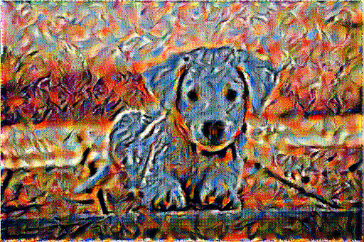
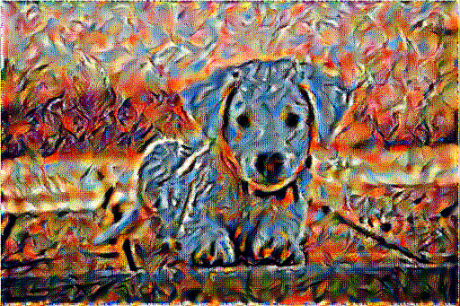

Stylized Image Generator
- Implemented a Neural Style Transfer pipeline using InceptionV3 model, selected layered to extract features, and optimized generated images to achieve stylized content.
- Developed custom functions using TensorFlow for image preprocessing, calculating Gram matrices to capture style features independent of spatial structure, and ensuring the fidelity of source images.
- Converged the losses using Adam optimizer with exponential decay learning rate to produce more appealing results within the same generating duration.
Neural Style Transfer
Gram Matrices
TensorFlow
Generative AI